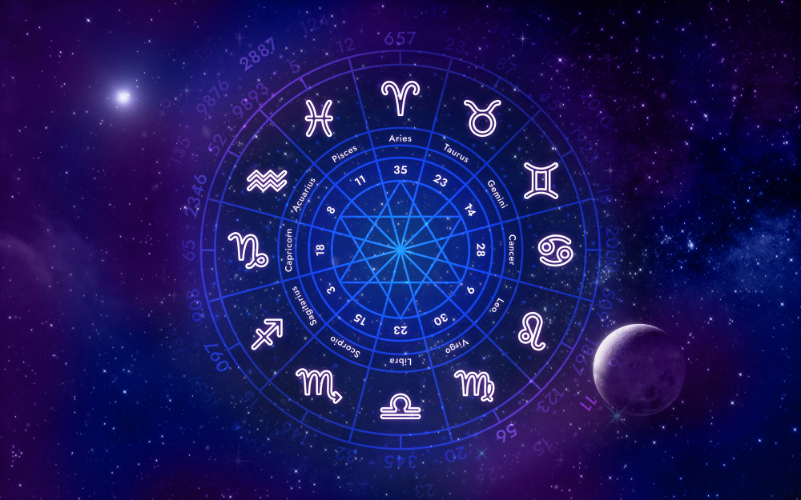

Что же такое гороскоп?
Гороскоп - это прогноз событий или характеристика личности на основе положения планет и звезд в определенный момент времени. Слово “гороскоп” происходит от греческих слов “хоро” (время) и “скопео” (смотрю). То есть гороскоп - это то, что мы видим на небе в определенное время.Существует множество видов гороскопов, которые могут быть составлены для разных целей и по разным методам. Например натальный гороскоп, солнечный, любовный и так далее. Также, гороскопы, его составление и толкование тесно связаны с асатрологией. Что же это?
Астрология - это наука о влиянии планет и звезд на жизнь человека и мира. Слово “астрология” происходит от греческих слов “астер” (звезда) и “логос” (учение). То есть астрология - это учение о звездах. Астрология - это не только составление гороскопов,но и изучение законов и принципов, которые определяют взаимодействие между небесными телами и земными явлениями. Астрология - это система знаний, которая объясняет, как планеты и звезды влияют на наш характер, судьбу, здоровье, отношения, карьеру и многое другое. Астрология - это искусство, которое требует от нас наблюдательности, аналитического мышления и интуиции.

Как пользоваться гороскопами и астрологией?
Может быть, ты думаешь, что гороскопы и астрология - это что-то сложное, непонятное и ненужное. Но это не так. Гороскопы и астрология - это то, что может помочь тебе лучше понять себя, свой мир и свои возможности. Вот несколько советов, как пользоваться гороскопами и астрологией:
1)Не верь всему, что ты читаешь или слышишь. Гороскопы и астрология - это не догма или закон, а лишь указание или совет. Ты сама решаешь, что делать со своей жизнью и как ее улучшить. Используй гороскопы и астрологию как подсказку или руководство, но не как обязательство или оправдание.
2)Не ограничивайся одним видом гороскопа или астрологии. Гороскопы и астрология - это очень разнообразная и многогранная область знания, которая предлагает тебе много вариантов и подходов. Изучай разные виды гороскопов и астрологии, сравнивай их между собой, выбирай те, которые тебе больше подходят и нравятся.
3)Не бойся экспериментировать и учиться. Гороскопы и астрология - это не только информация, но и опыт,который ты можешь получить и применить в своей жизни. Не бойся пробовать разные практики, техники и методы, которые тебе предлагают гороскопы и астрология. Не бойся делать ошибки, задавать вопросы и учиться у других. Гороскопы и астрология - это постоянный процесс познания и развития.